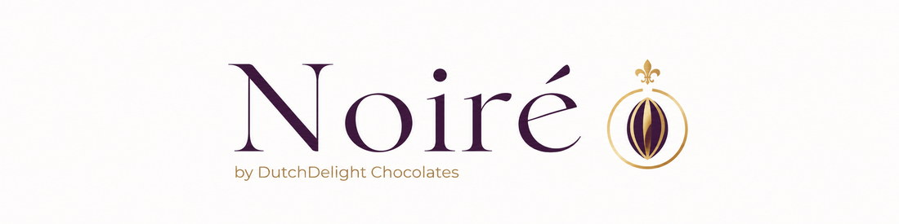
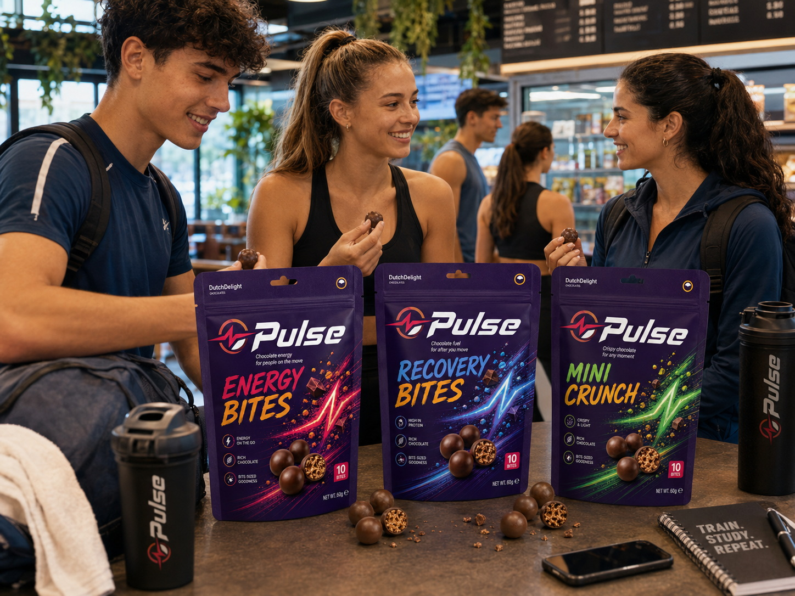
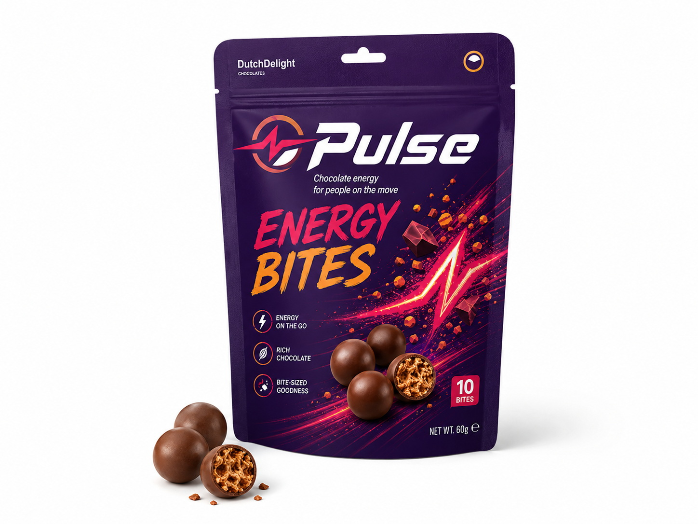
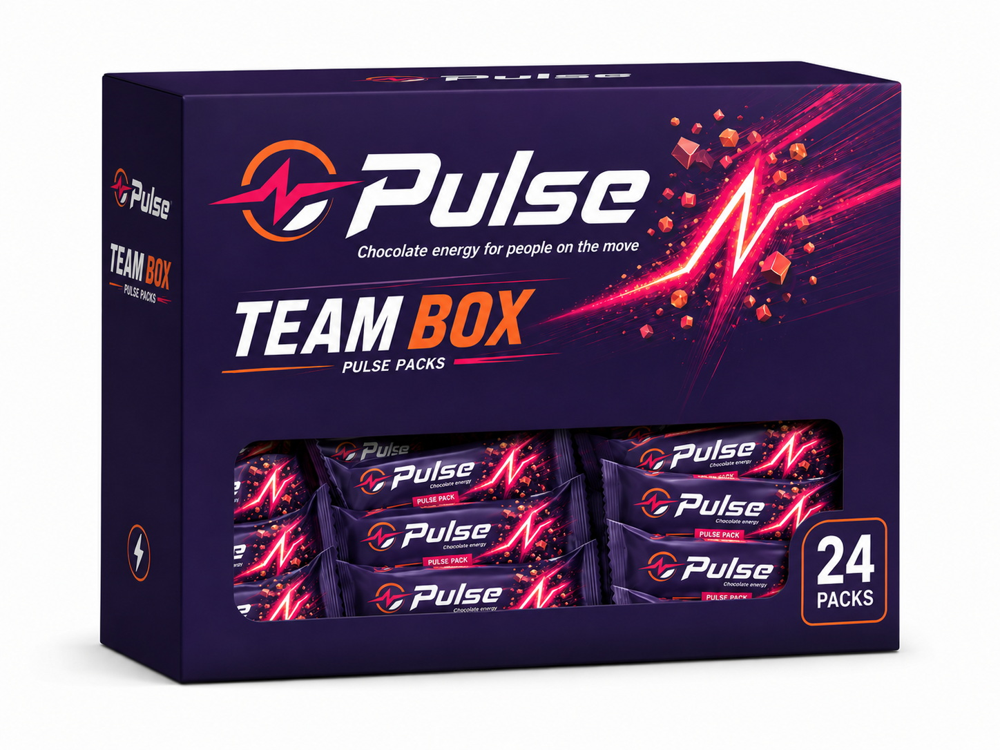
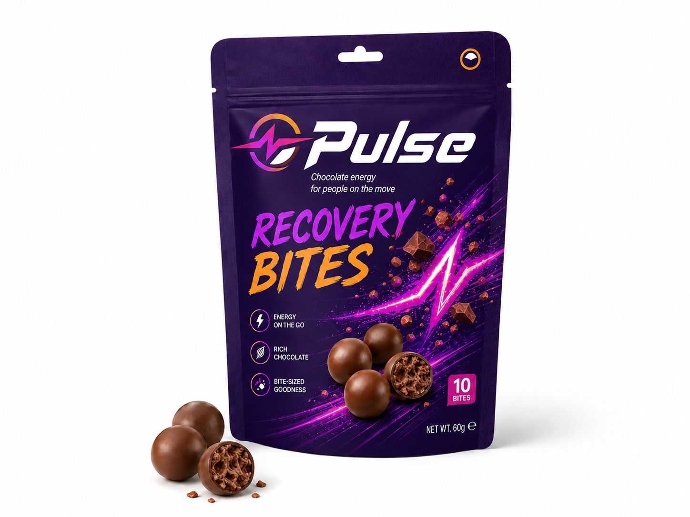
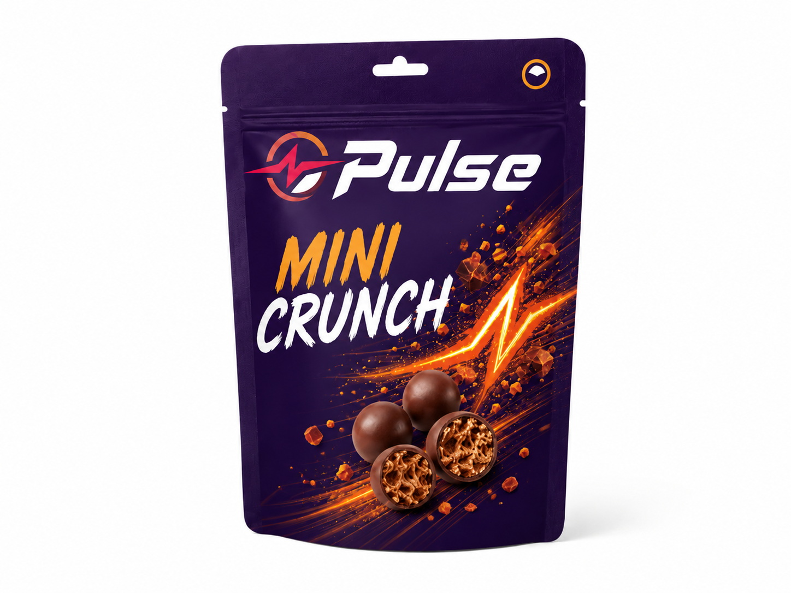
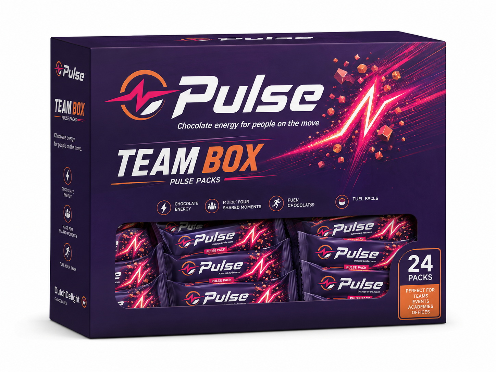
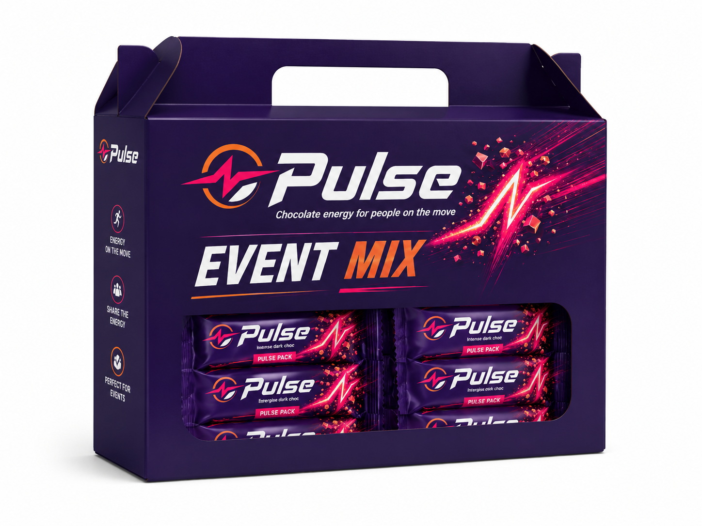
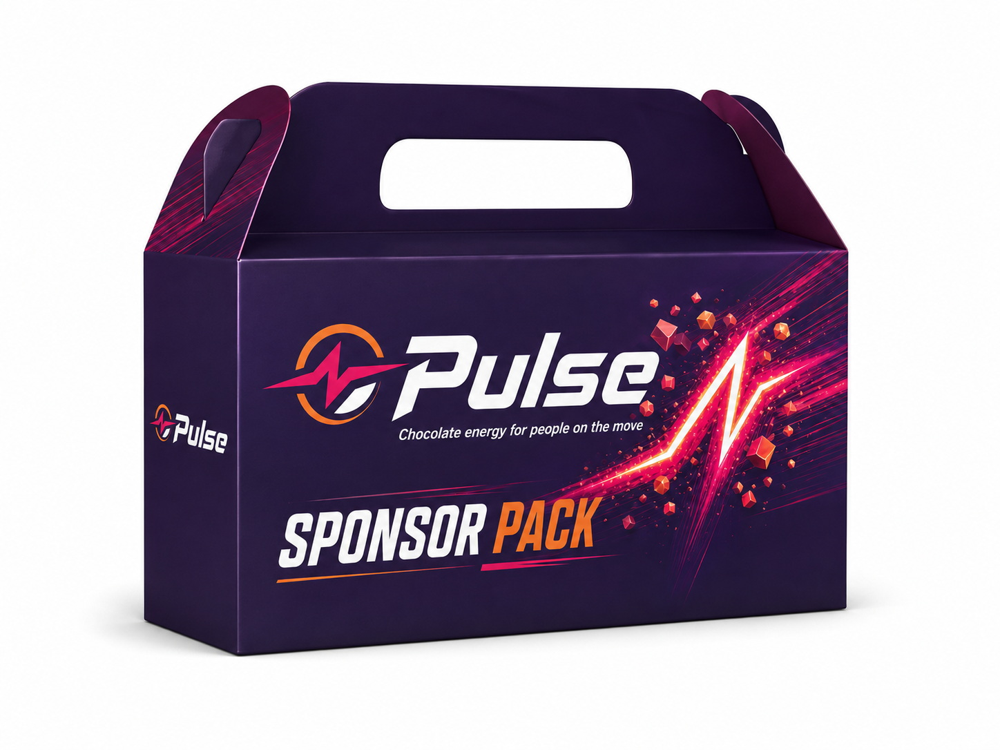

Pulse Bars
Crunch Bar, Protein Choco en Oat & Cacao. Individueel verpakte chocoladerepen voor onderweg, sport, studie en impulsverkoop.
Pulse — by DutchDelight Chocolates
Pulse is het energieke chocolademerk voor sport, studie, onderweg, events, vending en schoolkantines.


Crunch Bar, Protein Choco en Oat & Cacao. Individueel verpakte chocoladerepen voor onderweg, sport, studie en impulsverkoop.

Energy Bites, Recovery Bites en Mini Crunch. Kleine portieverpakkingen voor delen, proeven en snackmomenten.

Team Box, Event Mix en Sponsor Pack voor sportdagen, events en zakelijke toepassingen.






| Verkoopkanalen | Sportkantines, scholen, vending, tankstations, events, bedrijfsrestaurants en campuslocaties |
|---|---|
| Verpakking | Individuele repen, portieverpakkingen, toonbankdisplay, eventdozen en team packs |
| Doelgroep eindgebruikers | Jongeren, studenten, sporters, forenzen en actieve volwassenen |
| Koopmotief | Gemak, impuls, herkenbare energie-uitstraling, marge en zichtbaarheid op drukke locaties |
| Promotie | Sampling bij events, point-of-sale materiaal, social posts en acties met sport- of schoollocaties |